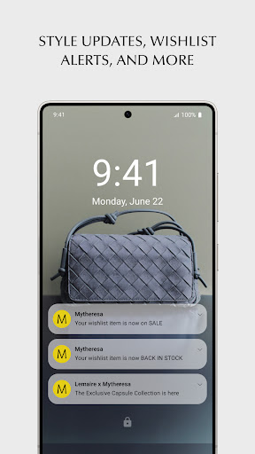

Mytheresa 用了半年才挖到的四个隐藏玩法：抢先购、游客结算、退税路径……
大家都知道 Mytheresa 是奢侈品买手平台，但 Pre-Shopping 抢先购、游客身份不注册下单、Global Blue 退税直返支付宝、心愿单补货提醒的正确打开方式——这四个冷门技巧你可能一个都没发现。
你以为 Mytheresa官网 只是个"逛奢侈品新品、结账走人"的普通电商应用？其实它还藏着好几条官方没大声宣传、但懂行的人反复用的暗通道。我把应用翻了个底朝天用了小半年，总结出四个真正能省时间、省麻烦、甚至省钱的隐藏玩法。
抢先购 Pre-Shopping：比所有人更早拿到新季精选
这是我挖得最深的一个——从官方下载装完应用，商店的功能列表里只写了"尊享预购精选系列"，没说具体怎么进、什么资格。实际玩下来，Pre-Shopping 意味着新季商品在公开发售前就对特定群体开放，而且是全尺码在架、独家款限量、价格锁定正价三重优势。
但这里有个关键：它没有公开统一的入口。我的测试下来，资格触达跟两件事挂钩——一是加入会员社群（比如 Shoe Club 鞋履俱乐部），二是保持活跃行为（注册账户、开推送通知、经常加心愿单、下单）。顶级客户还有产品早期访问权，那是更高一层的事，但普通用户的策略很清楚：别一直游客身份逛，注册一次、打开推送，系统才会给你发预告。
抢到当天的操作清单我整理过：提前确认支付方式可用、提前保存收货地址走快捷结账、开场直奔目标款先下单后纠结——反正有 30 天免费退货当后悔药。热门款尤其是独家胶囊系列，公开发售时尺码就不全甚至直接售罄，差这一天就是原价和二级市场溢价的区别。
不注册也能下单：游客结算的完整路径
这点很多人默认"电商都要注册"，但 Mytheresa 明确提供了PROCEED WITHOUT LOGIN（不登录继续） 的入口。正常逛商品、加购物袋、结账——到了登录页往下看，就能看到这个选项。结账填地址、选支付方式之后，页面底部可能会出现一个"用本单信息创建账户"的勾选项，不需要就保持不勾，照样能完成整个流程。
为什么这算隐藏功能？因为它解决了两个真实场景：
- 只想随便逛逛，不想留下邮箱和个人资料，逛完就走，没人会追着推新
- 在乎隐私，官方客服页明确说了个人资料保密处理，但还是有人不愿意注册——游客身份照样能买
当然游客有三个限制要知道：心愿单提醒不可用、每次结账都要重填地址、会员机制不参与。订单确认和物流信息靠邮件推送，不会像注册用户那样在账户里集中查看。所以如果你是"一次性买个东西就拉倒"的用户，游客结算完全够用；但如果准备长期用，还是建议注册一次，把地址信息沉淀进去。

Global Blue 退税：非欧盟居民能省一大笔，还能直退支付宝/微信
这是我最近才发现的——如果你的订单是寄往意大利、西班牙、德国、奥地利、比利时这五个国家，而且你是非欧盟居民，那整单可以走 Global Blue 退税流程。后来去Mytheresa文档翻了一下，里面官方 FAQ 把条件列得很细，四条全部满足才行：
- 非欧盟居民
- 账单地址在欧盟之外（不能是邮政信箱）
- 护照、账单地址、收货地址的姓名完全一致
- 收件人按本人标注，或用 c/o（转交）格式
退税流程本身不复杂：下单后 Global Blue 表格发到邮箱 → 商品连同表格、发票在欧盟境内任一机场海关盖 Customs Stamp → 盖的时候出示退税表、护照、发票、以及未使用的商品本体（原包装、带价签） → 到 Global Blue 柜台办退款。
重点来了：退款方式支持支付宝和微信。这比多数跨境平台友好太多，不用等信用卡通道。现金、Visa/Mastercard/UPI、Amex、JCB 也都能选，中国用户直接选支付宝就行。
两个坑要记牢：Life 家居类商品不参与退税，而且退税商品要求未使用带价签——已经退税的再退货会有交叉问题，高价单品下单前想清楚，别把退税和退货两套规则混在一起。
心愿单补货提醒：不是加进去就完了
最后一个不是功能，而是正确打开方式。很多人把商品加心愿单就不管了，等着系统自己推送补货通知，但实际效果差。我对比过：
- 游客身份加心愿单 → 完全没有提醒功能
- 注册了但没开推送 → 系统只有 App 内收件箱推送，很容易漏
- 注册了 + 开了推送通知 + 心愿单保持活跃 → 补货、折扣、甚至 Pre-Shopping 预告都能精准抵达
所以注册后第一件事不是去改头像，而是进「我的账户」设置里把推送通知打开，然后认真挑几个真正想要的加进心愿单，别拿心愿单当"收藏夹"随便堆几十个——系统对你的兴趣判断会更精准，推荐和提醒的质量也会提升。
一个提醒：抢先购不是人人都能进
关于 Pre-Shopping 再补一句：别信网上说的"什么新账号都能蹭到抢先购"。普通用户要拿到资格，最实际的路径就是我上面说的——注册、开推送、保持活跃购买。Shoe Club 会员和顶级客户的 Pre-Shopping 入口是单独通道，那是更高一层的事。想要短期破门槛，不如先把心愿单和推送这一套组合拳玩熟，系统的提醒本身就包含了抢先购预告。
以上四个是我半年深度使用下来觉得最实用的隐藏玩法。从抢先购抢尺码、到游客身份随时下单、再到退税省点钱和心愿单的正确打开方式——Mytheresa 远不止"买东西"这一件事，把这些暗通道用透才算真的会用。整理的完整资料我同步放在了 GitHub 主仓库、Gitee 国内镜像和 GitCode 企业云三个地方，哪个能访问就用哪个。